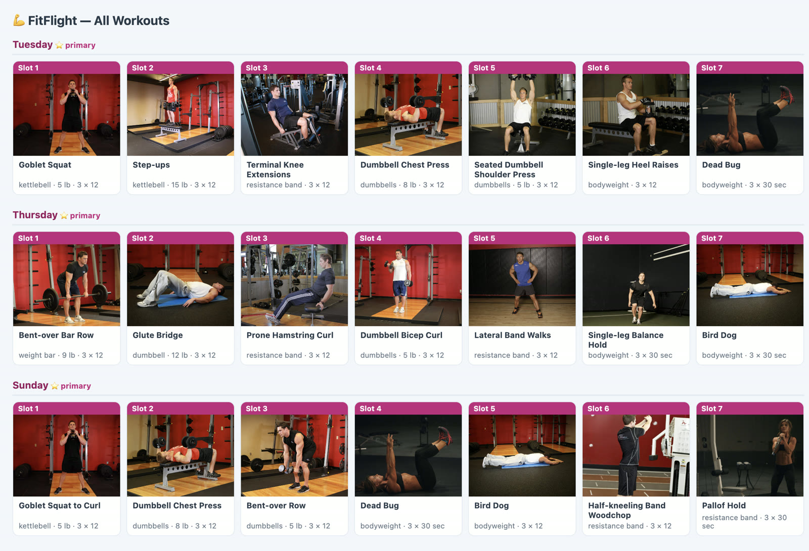

I build financial tools and workflow automations that work.
Twenty-five years in asset management, now applied with AI—most
recently taking about 70% of the manual data handling out of my
client’s daily reconciliation.
Manual data handling down ~70%; the reconciliation
day, a third shorter
Building
Agents, pipelines and apps, AI-assisted
Who I help
Investment operations teams carrying a process that only works because
someone is holding it together by hand.
Asset managers, asset servicers, and the consultancies working
alongside them. Usually the problem isn’t that nobody
understands the process—it’s that understanding it has
become a full-time job, and the people who do are spending the day
assembling data instead of acting on it.
I have been the person doing that assembling. That is why I know which
parts are safe to automate, and which parts are where the judgment
actually lives.
Reconciliation breaks — positions or values that
disagree across systems, with no fast way to say which source is
wrong.
Manual controls — checks that exist because a person
performs them, and quietly lapse when that person is away.
Fragile spreadsheets — a workbook that became
production infrastructure without ever being tested like it.
Data-quality issues — security-master and
account-configuration errors that only surface downstream, long
after they were introduced.
Workflow bottlenecks — a daily cycle where most of the
hours go to gathering inputs rather than resolving exceptions.
Case study
AI automation didn’t just make the day shorter. It changed what the
day is made of.
Before
sources
by hand
compare
investigate
80%
20%
gathering dataanalysis
Most of the day went to assembling data. Breaks surfaced late, after
the hours were already spent.
After
sources
automation
exceptions
investigate
30%
70%
⅓
gatheringroot-cause analysisof the day returnedreturned
AI automation now assembles the data and flags the exceptions. The day
is shorter, and spent explaining numbers rather than collecting them.
gathering dataanalysis and root-cause worktime returned
Problem
Positions and valuations arrived from several separate systems, each
with its own schema and its own version of the truth. Most of the
working day went into assembling that data into something
comparable—before anyone could begin asking whether it was
right. Breaks surfaced late, and the investigation started after the
hours were already spent.
Approach
I built AI-assisted automation to take over the assembly: pulling and
normalising across the sources, comparing complete populations rather
than samples, and surfacing exceptions instead of waiting to be asked
for them. Domain knowledge decided what counted as a break and what
was noise. The tooling only made that judgment fast enough to apply
every day.
Result
About 70% of the manual data handling came out of the process,
and the day itself got roughly a third shorter. The more useful change
was to the hours that remained: they moved from gathering data to
troubleshooting and root-cause analysis—from assembling numbers
to explaining them.
What I've built
Working tools and workflows, front and center.
Every card in the stream is a project from this page — built
with Claude Code.
Working tools and workflows I've built with Claude Code — not tutorials or
course exercises. The two financial tools run on my own household data, so
they're shown as recordings of de-identified builds; every figure on
screen is invented. Demonstrating what a tool does without exposing what
it holds is part of building it properly.
Household retirement projector
Problem
Retirement calculators answer the easy question. They ignore the
one that decides the outcome: what the tax code does to two people
drawing from three account types at different claim ages.
Approach
A two-person model with a working tax engine—federal
brackets and the standard deduction with the 65+ addition,
long-term capital gains stacked on top, Social Security taxed on
the provisional-income rule, required minimum distributions, and a
state retirement-income exclusion. Withdrawals sequence through
taxable, tax-deferred and Roth accounts, with claim-age sliders
for both people.
Result
A projection whose every rule can be pointed at and checked, so a
claim-age decision rests on a number that was derived rather than
guessed.
Shown de-identified · real figures never leave my machine
JavaScripttax modellingSECURE 2.0
Multi-account expense tracker
Problem
Four accounts, four export formats, and no honest view of a year's
spending. Categorising by hand collapses at roughly a thousand
transactions, and transfers between my own accounts were
double-counting as money spent.
Approach
A Python pipeline that normalises the four schemas, reconciles and
categorises every transaction, then strips transfers and card
payments so money moving between my own accounts never reads as
expenditure.
Result
A year of spending in one view—published with an audit tally
of every transaction it excluded and why, so the total can be
checked instead of trusted.
Shown running on synthetic data
Pythondata pipelinereconciliation
Scheduled research agents
Autonomous weekly runs that gather AI and finance developments, judge
what's actually worth covering, and hand back a briefed topic list
rather than a pile of links.
agentsautomation
Content production pipeline
An end-to-end system: skills that draft in a consistent voice, grade
the draft against a rubric, generate the video, and schedule the post.
Built to run weekly without me holding it up.
Claude Codevideoscheduling
Airplane Clock Overlay
A macOS desktop app — a transparent, click-through overlay that flies
a small dog-photo badge and the current time across the screen on a
timed cycle. Electron, packaged and signed for local install.
ElectronmacOS

FitFlight workout reminders
A macOS tray app that paces a workout across the day — seven timed
prompts, each opening an illustrated exercise card. Five of the seven
marks the day done, and a fully missed day carries forward exactly
once, so one slip doesn't quietly become a lost week.
ElectronmacOS
Multi-agent shopping skill
A Claude Code skill that fans a shopping brief out to parallel agents
— searching listings, reading reviews, comparing prices — then a judge
pass weighs their findings and hands back one recommendation with the
reasoning attached.
Claude Codemulti-agent
Lead generation & scoring
Scraping tools that assemble prospect lists, then a classification
pass that scores and ranks them so outreach effort goes where it has a
chance of landing.
ApifyLLM scoring
Statement parser
Turns PDF statements into clean, structured CSV — the unglamorous step
that makes everything downstream possible.
PythonPDF
Nexora landing page
A hero built to a written spec rather than a mood board — type scale,
motion timings, colour tokens and layout all fixed in advance, then
implemented in plain HTML and CSS with no framework underneath. The
dashboard behind the fold is coded too, SVG chart and all, so it stays
sharp at any size instead of blurring like a screenshot.
Nexora is a fictional product · every figure invented
I build faster with AI because I already understand the work.
Claude Code and Codex accelerate how I create; more than 25 years in asset
management shape what I build and how I determine whether it works. My
experience spans pricing and valuation, market data, investment
operations, data governance, and large-scale platform change.
Fluent in Snowflake and Microsoft SQL Server, I combine industry
knowledge, data analysis, and AI-assisted development to automate
workflows, strengthen controls, and turn complex requirements into
practical solutions.
Foundation
Two decades in investment operations before consulting. It's where I
learned how these firms actually work — the systems, the data, the
controls, and what it costs when a number is wrong.
Ran a team of 16 with oversight of third-party administrators and
custodians. Functional lead on the Eagle STAR implementation and the
Aladdin corporate-actions build, and integrated operations through
the OppenheimerFunds acquisition. Later owned valuation policy and
controls across most global locations, including the SEC Rule 2a-5
programme.
2006 — 2014
Deutsche BankVice President — Valuation Services
Supervised six analysts running the client valuation control
platform across corporate bonds, non-agency RMBS, subprime ABS and
non-performing whole loans. Built models for exotic fixed income and
handled enquiries from clients, FINRA, BaFin and external audit.
2004 — 2006
Western Asset ManagementSupervisor — Pricing
Managed five analysts across governments, corporates, MBS, swaps,
futures and options.